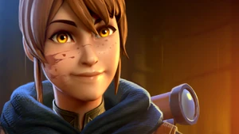

|

|
Proving that undying loyalty yields unrivaled power, Marci always
marches into battle ready to raise fists in defense of her companions.
Effortlessly Disposing friends and foes around the battlefield. With a
friendly or brazen boost, she happily finds her way into the midst of
any fight. Using allies as an anchor, she Rebounds into and out of any
brawl with deadly speed, dauntlessly deterring against harming any
she deems friend. Those who attempt to undermine her stature, or as
Princess Mirana's rookie Sidekick, will be single-targetly crushed as she
Unleashes a hidden power strong enough to make even gods
reconsider the wisdom of a hostile path.
|